Teorema di Hurewicz
Teorema
Sia  spazio topologico connesso per archi, 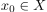 (ovvero è oggetto della categoria degli spazi topologici puntati, 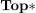).
Sia 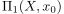 il gruppo fondamentale di e 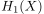 lo
spazio topologico connesso per archi, 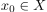 (ovvero è oggetto della categoria degli spazi topologici puntati, 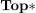).
Sia 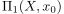 il gruppo fondamentale di e 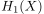 lo  -modulo di omologia singolare di (ovvero un gruppo abeliano).
Allora esiste un morfismo, detto Mappa di Hurewicz
-modulo di omologia singolare di (ovvero un gruppo abeliano).
Allora esiste un morfismo, detto Mappa di Hurewicz
suriettivo tale che 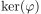 (vedi Kernel) sia l’abelianizzato di :
Corollario
Per il primo teorema di isomorfismo
Dimostrazione
In tutta la dimostrazione, si indicherà con gli elementi di e con 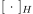 gli elementi di .
Costruzione della funzione
Sia  . Allora
. Allora  è un cammino chiuso, ovvero una funzione continua
è un cammino chiuso, ovvero una funzione continua
tale che 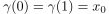.
Inoltre 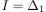 (vedi Simplesso Standard), 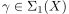 (vedi Simplesso singolare) e quindi (vedi Modulo della catene singolari) Inoltre, se 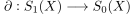 è la mappa di bordo tra catene singolari,
e pertanto, se 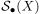 è il complesso di catene singolari, allora 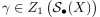 (vedi Modulo di omologia dei complessi di catene). Pertanto 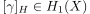.
Costruiamo la mappa
Buona definzione di  top_alg matematica_lm
top_alg matematica_lm
Supponiamo che 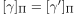. Allora per definizione sono omotope, , e dunque esiste
continua tale che
Costruzione di 
Sia 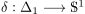, 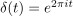 e 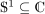. Allora 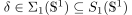 (vedi Simplesso singolare e Modulo della catene singolari.) Se 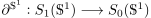 è la mappa di bordo si ha che
e pertanto 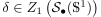 e 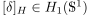 (vedi Modulo di omologia dei complessi di catene e Omologia Singolare).
Diagramma commutativo
Esistono uniche 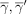 funzioni continue tali che il seguente diagramma commuti:
Funtore diesis
Funtore di omologia
Applicando invece il funtore di omologia, si ottengono
Scrittura tramite mappe funtoriali
Utilizzando queste mappe, si ha che
Omotopia tra 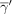 e 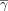.
Costruiamo esplicitamente una omotopia
Innanzitutto, per ogni 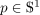 esiste un unico 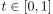 tale che 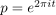. Dunque si pone
Il seguente diagramma mostra la situazione
Inoltre si ha che
e pertanto sono omotope:
Applicazione del teorema
Applicando il corollario del teorema di invarianza per omotopia, si ottiene che

e pertanto, siccome 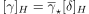 e 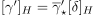 si ha che
e dunque la funzione è ben definita.
La mappa è un morfismo di gruppi top_alg matematica_lm
Per dimostrare che sia un morfismo di gruppi, si deve dimostrare che
- 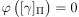 se e solo se 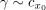 (omotopa al cammino costante 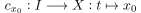, ).
Per ogni ,
dove
 è la giustapposizione di cammini.
è la giustapposizione di cammini.
Parte 1
TODO Dimostrazione -> top_alg
Se , allora
Dimostrazione <-
Se , per il punto precedente, allora . Si dimostra che . Sia :
Allora, considerati gli operatori di facciata , e considerata la mappa di bordo
e pertanto (vedi Modulo di omologia dei complessi di catene) e quindi .
Parte 2
In generale
Siano , tali che Si definisce la seguente funzione continua (per il Lemma di incollamento)
Considerati gli operatori di facciata , e considerata la mappa di bordo
Con il seguente disegno si mostrano gli operatori di facciata sul 2-simplesso standard:
Pertanto si ha che:
dove è il cammino inverso. Dunque per definizione , e quindi
Dunque
Gruppo Fondamentale
Pertanto, se allora (vedi Modulo di omologia dei complessi di catene) e quindi ha senso scrivere:
Ponendo il cammino costante, si ottiene che, per il punto precedente e e pertanto, per la buona definizione di , e quindi, per ogni , si ha che
Si ottiene quindi la tesi .
La mappa è suriettiva top_alg matematica_lm
Sia , con  tale che, se è la mappa di bordo, allora
tale che, se è la mappa di bordo, allora
Si definisce
Per ogni sia funzione continua tale che e (tale cammino esiste poiché è cpa).
Per ogni  definisco
definisco
dove è la giustapposizione di cammini e è il cammino inverso. Evidentemente ed inoltre1 , con
Dunque, considerando , si ha che
Siccome e è una base di (vedi Modulo Libero Generato da un insieme), allora è un insieme linearmente indipendente di , e dunque .
Pertanto
Dunque
Siccome
allora
e quindi .
Il nucleo della mappa è l’abelianizzatore del gruppo fondamentale top_alg matematica_lm
Siccome è suriettiva, allora per il primo teorema di isomorfismo
Siccome è uno -modulo, allora è un gruppo abeliano, e pertanto .
Viceversa, si dimostra che .
Sia tale che e  sia una generica curva da
sia una generica curva da  a
a  .
Si definisce come la classe di equivalenza
.
Si definisce come la classe di equivalenza
sui membri della base . (Questo infatti è un morfismo tra -moduli, gruppi abeliani poiché è abeliano)
Parte I
Supponiamo  cappio in . Allora e dunque8
cappio in . Allora e dunque8
Parte II
Sia ora , e supponiamo che, detta la mappa di bordo, sia
In particolare si avrà che
Allora
Ma è omotopo al cammino costante in  , in quanto è un cammino contenuto semplicemente connesso (Immagine continua di spazio semplicemente connesso è semplicemente connesso) e dunque
, in quanto è un cammino contenuto semplicemente connesso (Immagine continua di spazio semplicemente connesso è semplicemente connesso) e dunque
Pertanto, se , si ha che .
Conclusione
Se ,
- allora , ovvero , e dunque
- allora , e dunque è un cappio in , e pertanto
Dunque  , e quindi
, e quindi
Footnotes:
Perché???